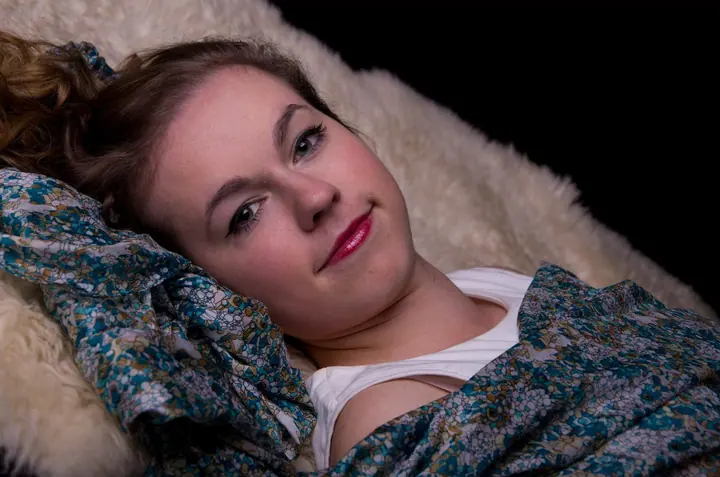

Portréty v interiéru
Portréty uvnitř na tmavém nebo světlém pozadí. Pracuji se světlem, stínem a výrazem.

Portrétní fotografka
Jmenuji se Denča a studuji obor fotograf v Brně. Nejraději fotím portréty v interiéru i venku. Při focení se pořád učím něco nového a hlavně poznávám nové lidi.
Zeptat se na termín
Portréty uvnitř na tmavém nebo světlém pozadí. Pracuji se světlem, stínem a výrazem.
Focení venku v parku, u staré zdi nebo v zeleni. Přirozené světlo a prostředí, ve kterém se cítíte dobře.
Ahoj, jsem Denča a v Brně studuji obor fotograf. Focení je pro mě způsob, jak poznávat nové lidi a zároveň se pořád posouvat dál.
Nejvíc mě baví portréty. Někdy uvnitř na tmavém pozadí, kde si hraju se světlem a stínem, jindy venku v parku nebo u staré zdi, kde pracuje přirozené světlo.
Jsem komunikativní, takže se při focení nemusíte bát trapného ticha. A když přijdete s nápadem, ráda ho vyzkouším.

Ozvěte se e-mailem nebo přes Facebook a napište, jaký portrét si představujete.
Společně vybereme, jestli budeme fotit uvnitř nebo venku, a probereme oblečení a styl.
Na focení si uděláme čas a v klidu. Povídáme si, zkoušíme různé pózy i nápady.
Z focení vyberu nejlepší snímky, upravím je a pošlu vám je.
Vůbec ne. Během focení vám poradím, jak stát a kam se dívat, a v klidu si to spolu vyzkoušíme.
Fotím v Brně, v interiéru i venku. Místo vybereme podle toho, jaké fotky chcete.
Hlavně oblečení, ve kterém se cítíte dobře. Klidně si vezměte víc variant, na místě vybereme, co sedí nejlíp.
Nejlépe e-mailem na dendiiisek@gmail.com nebo přes Facebook, kde mě najdete jako Deniska Vobořilová.